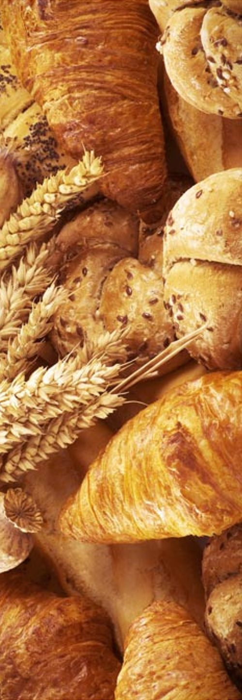
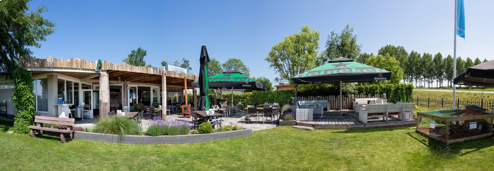
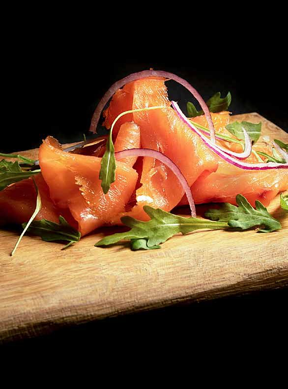
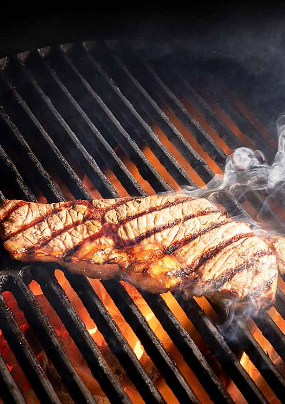
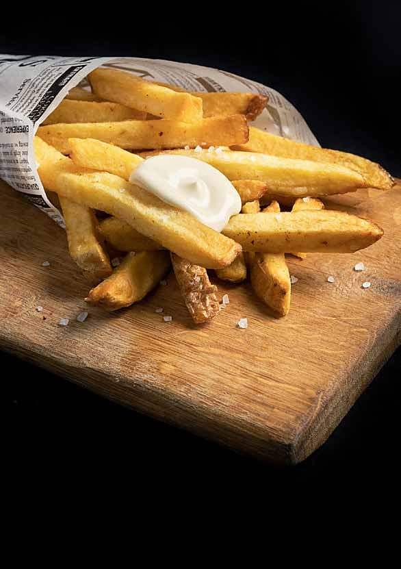
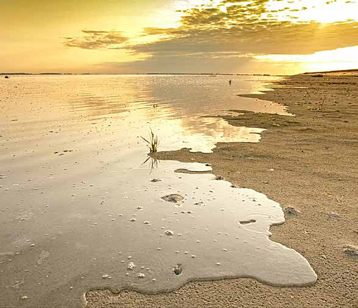
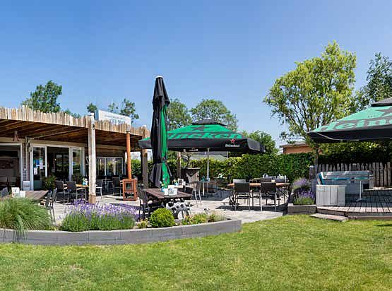

Ontbijt
08.00 – 10.00 uurCompleet ontbijt in de brasserie of om af te halen. Reserveer een dag van tevoren.
Meer info
Voor ontbijt, lunch, diner of een borrel, met een speeltuin vlak bij het terras voor de kinderen. Dinsdag t/m zondag open vanaf 11.30 uur.
Wij waren met 4 personen, het eten was verrassend heerlijk de sfeer warm en gezellig.Ri op Google
Bij ons kun je de hele dag terecht. Veel gerechten zijn ook vegetarisch te bestellen.

Compleet ontbijt in de brasserie of om af te halen. Reserveer een dag van tevoren.
Meer info
Broodjes, salades, burgers, pizza's en de 12-uurtje met tomatensoep.
Bekijk de kaart
Spareribs van de Big Green Egg, bovenmaatse tongen en Zeeuwse mosselen.
Bekijk de kaart
Bitterballen, de snaaiplank, speciaalbier, cocktails en ice coffee.
Bekijk de kaartVoor groepen vanaf 12 personen, vanaf € 9,75 p.p.
Bestel vóór 16.30 uur aan de bar of telefonisch.
Een paar recente reviews van Google.
"Heerlijk gegeten, kok kwam nog even langs om te vragen hoe het eten beviel, is altijd een goed teken! Porties voor ons aan de grote kant, dus je hoeft hier geen honger te lijden. Goede bediening ook."
Hans van der Wart · Google"Wij waren met 4 personen, het eten was verrassend heerlijk de sfeer warm en gezellig. Alles bij elkaar een fantastische avond."
Ri · Google"Lekker eten leuk en gezellig en heerlijk terras"
Leo Arnout · Google"Nettes Restaurant am Eingang der Ferienhaussiedlung. Netter Service. Hat Spaß gemacht."
JMB · GoogleOp de solex of E-Chopper door het Thoolse landschap, suppen op het Setallandse strandje en daarna lekker eten bij ons. Samen met Solex Verhuur Tholen en Catalina SUP.
3 verschillende planken (voor, hoofd & na) vol met verschillende kleine gerechtjes. Leuk om samen te delen met vrienden, collega's of familie.
€ 38,50 p.p. Exclusief drinken · vanaf 4 personen, vooraf reserveren Reserveren
3 uur rijden door het Thoolse landschap. Solex en E-Chopper kunnen ook gecombineerd worden.
1,5 uur suppen op het Setallandse strandje.
Prijzen zijn exclusief drinken. Bel of mail ons om een arrangement te boeken.
Brasserie de Deu-Braek is het restaurant van André en Janny van Ast, aan de Nieuwlandseweg in Sint-Annaland. Op ons terras zit je tussen de lavendel en onder de parasols, en de kinderen spelen in de speeltuin ernaast.
Je komt bij ons voor een uitgebreid ontbijt, een broodje tussen de middag, een borrel of een goed diner. De kaart staat ook in het Duits, dus ook onze Duitse gasten voelen zich hier thuis.

Vrijdag 6 november proeven we 8 heerlijke wijnen. Aanvang 19.30 uur. Ontdek nieuwe smaken en misschien wel je nieuwe favoriet. Vol = vol!
Reserveer online of bel ons even. Voor groepen en arrangementen kun je ook André direct bellen.